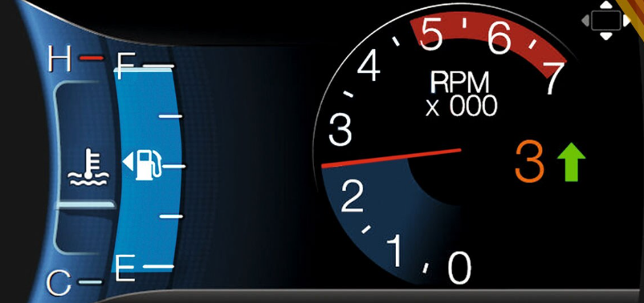

Consumo de combustible y la velocidad de un vehículo

La actividad consiste en analizar la relación entre el consumo de combustible y la velocidad de un vehículo, utilizando un muestreo a 10 personas que tengan coche ya sea papá, mamá, docentes, vecinos, tío, etc... El objetivo es determinar si hay una correlación entre las dos variables, y qué tipo y grado de correlación hay.
Para realizar el muestreo, se utilizará un método de muestreo no probabilístico por conveniencia, que consiste en elegir a los 10 participantes según su disponibilidad y facilidad de acceso1. Cada participante deberá registrar el consumo de combustible (en litros) y la velocidad promedio (en km/h) de su coche durante el trayecto que realizan cada semana. Registrar los datos en una tabla como la siguiente.
| Persona | Combustible (L) | Velocidad (Km/h) |
| 1 | ||
| 2 | ||
| 3 | ||
| 10 |
Una vez que se tengan los datos realizar la grafica para determinar el tipo de correlación. Positiva, negativa o nula.
Sera entregado en el cuaderno.
Finalmente, se presentarán los resultados y el diagrama obtenidos, explicando el significado e interpretación del coeficiente y el diagrama, y respondiendo a las posibles preguntas o comentarios de los demás participantes y del profesor. Así, se podrá sacar conclusiones sobre la relación entre el consumo de combustible y la velocidad de un vehículo